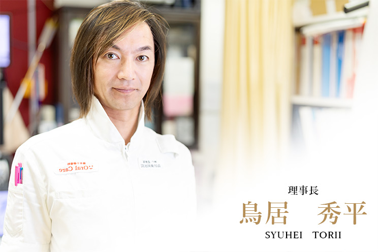
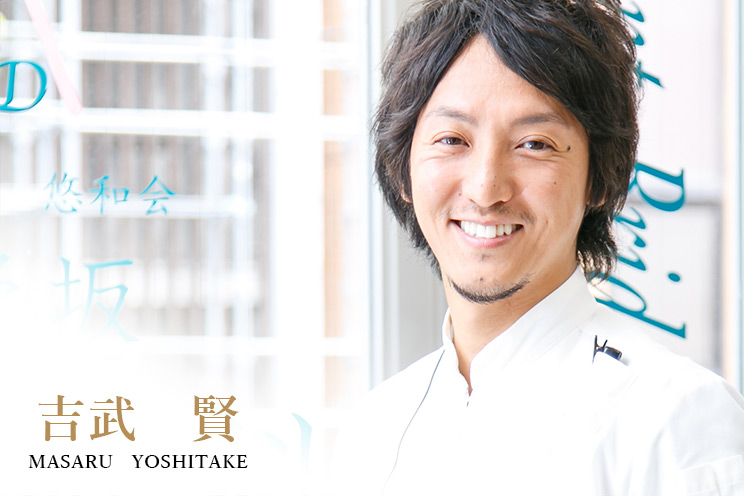
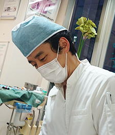
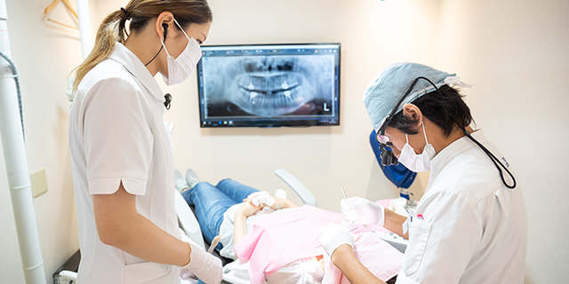

079-562-8471
079-562-8471- Home
- ドクター紹介・院内ネットワーク・求人
北野坂鳥居歯科医院のスタッフをご紹介しますStaff
兵庫県神戸市三宮の歯医者「北野坂鳥居歯科医院」では、「患者様、そして疾患に対して真摯に向き合う」を基本姿勢にして、日々の診療をご提供します。これからご来院の方も安心して診療を受けていただけるように、当院スタッフをご紹介します。スタッフ一同、患者様の笑顔のために、ホスピタリティ精神あふれる医院づくりに努めています。
ドクター紹介
| 理事長 | 院長 | 矯正担当医 |
|---|
理事長

カウンセリングと確かな歯科医療技術で、患者様に合う治療をご提供します
- 医療法人社団悠和会 理事長
- 公益社団法人 日本口腔インプラント学会 専門医 第1138号
略歴
| 1994年 | 日本大学松戸歯学部卒業 |
|---|---|
| 1996年 | 英国マンチェスター大学研究在籍 |
| 1998年 | 日本大学大学院 松戸歯学研究科修了 |
| 1998年 | 国立大学 東京医科歯科大学大学 歯学部 文部教官 |
| 1998年 | 東京医科歯科大学付属歯科衛生士学校 講師 |
| 1999年 | 国立大学法人 東京医科歯科大学大学院医歯学総合研究科 顎顔面機能再建学系専攻 文部科学教官 |
| 2001年 | 北野坂鳥居歯科 開業 アジア口腔インプラント学会 認定医 |
| 2006年 | 医療法人社団 北野坂鳥居歯科へ法人化 |
| 2009年 | インプラント・ブリッジセンター・ジャパン 併設 麻布十番歯科オーラルケア 開設 医療法人社団 悠和会に名称変更 |
| 2016年 | 日本口腔インプラント学会 専門医 |
所属
日本口腔インプラント学会 専門医
アジア口腔インプラント学会 認定医
日本インプラント臨床研究会 会員
日本顕微鏡歯科学会 会員
日本審美歯科学会 会員
日本構造医学会 会員
日本デジタル歯科学会 会員 など
メッセージ
私は医療に携わる者として「医は仁術」という言葉をつねに肝に銘じて診察しています。
歯を診るだけではなく“心”を捉える……患者様の思いをくみ取り、治療は誠実に愛情をもって行うことこそが「義」だと信じております。
そこで大切にすべきは、患者様の不安やご希望をお伺いしたうえで、その人に合った治療を選択し、ご提供させていただくことだと考えています。
また、当院ではオペ室、歯科用CT、マイクロスコープなどの設備があり、さまざまな歯科医療技術を駆使した安心の治療を受けていただくことが可能です。
歯や口腔内は、いわば大自然そのもの。
そんな大切な歯をお守りしつつ、安心して治療を受けていただけるような環境とカウンセリングを私はじめスタッフ一同心がけています。
院長

患者様にご満足いただける治療を目指し取り組みます
- 厚生労働省認定 臨床研修指導医
- 日本口腔外科学会 口腔外科認定医
- 日本救急医学会 ICLS認定医
略歴
| 2008年 | 国立九州大学歯学部卒業 |
|---|---|
| 2008年 | 神戸大学医学部付属病院口腔外科研修医 |
| 2009年 | 神戸大学医学部付属病院口腔外科医医員 |
| 2010年 | 加古川東市民病院口腔外科医員 |
| 2012年 | 関西リハビリテーション歯科口腔外科医長 |
| 2014年 | 神戸大学医学部付属病院口腔外科退局 （医）悠和会 北野坂鳥居歯科 院長 |
所属
日本口腔外科学会認定医
日本口腔インプラント学会
日本口腔腫瘍学会
日本口腔科学会
日本口感染症学会
日本有病者歯科医療学会
日本顎顔面インプラント学会
メッセージ
これまで、神戸大学病院口腔外科に所属し“口腔外科医”として大学病院・市中病院などで数多くの症例に立ち会いました。一般歯科診療はもちろんですが、全身麻酔手術は500例以上におよびます。
その経験をもとに、術後管理、全身疾患をもつ患者様への対応も問題ないと自負しております。また学会や勉強会にも積極的に参加し、さまざまな治療技術を学び、審美歯科からインプラント治療まで幅広い知識も習得しています。
コミュニケーションを大切にして「患者様にご満足いただける治療」を目指して務めてまいります。そしてこれからも日々の診療を通して、皆様に愛されるホスピタリティの高い医院を目指します。
矯正担当医

Dr.本田 和久
- 日本大学大学院松戸歯学研究科 修了 博士(歯学)
- サウスキャロライナ大学留学
- 日本大学歯学部矯正科 元医局員 矯正担当医
Dr. 本田 知久について
鳥居秀平理事長と大学院生時代にともに机を並べ、共に20年間切磋琢磨してきたDr. 本田 知久。大学院では細胞、組織、バイオミネラルの研究に没頭し、アメリカ研究員時代にはミネラルの分野で権威ある教授の教室に在籍していました。硬組織（歯や骨）に対する見識は解剖学者としても、矯正担当医としても一流です。日本大学歯学部病院長を歴任した叔父を持ち、祖父、父は勲章受章者です。
患者様の心に寄り添い、期待や希望をしっかりと受けるコンサルティング能力、高い診断力と経験、技を兼ね備えた矯正担当医です。
院内ネットワーク
兵庫県神戸市三宮の「北野坂鳥居歯科医院」と東京都港区の「麻布十番歯科」の2つの歯科医院がある「医療法人社団 悠和会」では、それぞれの医院の歯科医師や歯科衛生士、歯科技工士が医院独自の院内ネットワークでつながっています。これは、それぞれの専門的見地からスタッフ一人ひとりが活発な意見をやり取りするためです。それがコミュニケーション能力の向上やスキルアップ、チームワークの構築につながります。そして患者様に安心な診療をご提供するために日々、切磋琢磨するのです。
SNS活用のメリット
医療法人社団 悠和会では院内ネットワーク、SNS（ソーシャルネットワーク）を導入して、スタッフがいつでもコミュニケーションが取れるような体制を整えています。このシステムを使えば、日報やカンファレンス、症例の検討などテキストだけでなく動画を利用したオンライン会議が可能で、今現在、どのスタッフがどのような治療に携わっているのかを知ることができるだけでなく、スタッフ一人ひとりがグループの一員であるという意識が高まります。以前のようにスタッフの会議のために東京と神戸を行き来する必要がなくなり、SNS上のやりとりができるようになったことで、タイムラグなしで意見交換ができる環境が整ったのです。

【SNS活用でできること】
- 各医院の日報やカンファレンスの共有
- スペシャリスト同士での症例の検討
- スタッフ同士のコミュニケーションの活発化
- 動画を用いたオンライン会議
スタッフが一丸となる
難症例をトピックとした場合、有効な治療についてスペシャリスト同士で活発な意見交換が可能です。トピックを立ち上げた歯科医師にも意見を書き込む歯科医師にも、そしてそのやり取りを閲覧した歯科医師にも、多角的な治療法の検討の機会となります。これはスタッフのスキルアップにつながると同時に、患者様に対してもっとも合う治療をご提供することにつながるのです。
私たちは、つねに「きちんとした医療」を心がけています。患者様の負担を軽減し、ご要望を叶えられるように、いつも治療技術の向上をはかり、同時にスタッフの人間力もみがいています。院内ネットワークを、それぞれの分野のエキスパートが集まり試行錯誤できる環境として活用しています。
求人情報
兵庫県三宮の歯医者「北野坂鳥居歯科医院」では、歯科衛生士と歯科助手、そして歯科技工士を募集しています。患者様の笑顔のために日々、診療してくださる方をお待ちしています。
| 歯科衛生士 | 歯科助手 | 歯科技工士 |
|---|
歯科衛生士
当院では「チーム医療」を導入し、歯科衛生士のスキルをフル活用して診療に専念できる環境が整っています。そして数多くの症例に携わり、さまざまな経験を積むことができます。また歯科全般に対応し、つねに優れたあたらしい技術の導入に積極的です。さまざまな機器を設置していますので、治療することでスキルアップにもつながります。
歯科衛生士 募集要項
| 職種 | 歯科衛生士 |
|---|---|
| 応募条件 | 【採用年月日】新卒・2016年4月/中途採用随時 【試用期間】あり（3ヶ月） |
| 勤務時間 | 月～金 8:30～20:00(うち休憩90分) 土 8:30～19:00(うち休憩60分) |
| 給与 | 【正社員】240,000円～ （地域手当含む） 【限定勤務（8時間）】185,000円～215,000円（地域手当含む） |
| 昇給・賞与 | 【昇給】年1回 【賞与】医院業績による（年4回） |
| 休日 | 完全週休3日制(日・祝・他2日でシフト制) 平均12日 年間140日 【正社員】年2回のリフレッシュ休暇制度あり（7日/回） 【限定勤務（8時間）】年2回のリフレッシュ休暇制度あり（5日/回） ※勤続2年目以降 |
| 休暇 | 有給休暇 6ヶ月後より10日。2年目以降11日（最高20日） 慶弔休暇、出産育児休暇 あり |
| 待遇 | 【通勤手当】実費支給（上限30,000円） 【加入保険】健康保険、厚生年金、労災、雇用 【退職金制度】あり 【企業年金（正社員のみ）】あり |
歯科助手
歯科助手の仕事は、歯科医師と患者様を笑顔でつなぐ仕事です。患者様が安心して診療を受けられるように、積極的にコミュニケーションをはかってください。再診の患者様はもちろん、とくに初診の患者様にもリラックスしていただけるように応対していただきたいと考えています。そして歯科医師、歯科衛生士がスムーズにさまざまな処置ができるようにサポートしていただくのがおもな仕事です。
こんな方を求めています
患者様と歯科医師、そして歯科衛生士をつなぐ大切な業務を担っていただきます。そのため全体を見渡し、まわりの気を配り、「次に何をすればいいか？」をいつも考え、先を読める方を歓迎します。
歯科助手 募集要項
| 職種 | 歯科助手 |
|---|---|
| 応募条件 | 【採用年月日】新卒・2016年4月/中途採用随時 【試用期間】あり（3ヶ月） |
| 勤務時間 | 月～金 8:30～20:00(うち休憩90分) 土 8:30～19:00(うち休憩60分) |
| 給与 | 195,000円～ （地域手当含む） |
| 昇給・賞与 | 【昇給】年1回 【賞与】医院業績による（年4回） |
| 休日 | 完全週休3日制(日・祝・他2日でシフト制)月平均12日 年間140日 【正社員】年2回のリフレッシュ休暇制度あり（7日/回） ※勤続2年目以降 |
| 休暇 | 有給休暇 6ヶ月後より10日。2年目以降11日（最高20日） 慶弔休暇、出産育児休暇 あり |
| 待遇 | 【通勤手当】実費支給（上限30,000円） 【加入保険】健康保険、厚生年金、労災、雇用 【退職金制度】あり 【企業年金】あり |
歯科技工士
当院では院内技工室があります。ほかの歯科技工所とは異なり、患者様を近くに感じながら人工歯の作製ができます。患者様と直接会うことができるので、人工歯を作製する際に、より患者様に合う色調や形に仕上げられるのです。また、装着した際の患者様のご満足の笑顔にも会えるのが院内技工室のメリットで、モチベーションにつながります。
歯科技工士 募集要項
| 職種 | 歯科技工士 |
|---|---|
| 勤務時間 | 月～金 8:30～20:00(うち休憩90分) 土 8:30～19:00(うち休憩60分) |
| 給与 | 【正社員】240,000円～ （技能手当含む） |
| 昇給・賞与 | 【昇給】年1回 【賞与】医院業績による（年4回） |
| 休日 | 完全週休3日制(日・祝・他2日でシフト制) 平均12日 年間140日 【正社員】年2回のリフレッシュ休暇制度あり（7日/回） 【限定勤務（8時間）】年2回のリフレッシュ休暇制度あり（5日/回） ※勤続2年目以降 |
| 休暇 | 有給休暇 6ヶ月後より10日。2年目以降11日（最高20日） 慶弔休暇、出産育児休暇 あり |
| 待遇 | 【通勤手当】実費支給（上限30,000円） 【加入保険】健康保険、厚生年金、労災、雇用 【退職金制度】あり 【企業年金（正社員のみ）】あり |
採用の流れ
- STEP1 電話にて連絡を
- まずは電話で入社希望の旨を伝えてください。
- STEP2 書類選考
- まずは書類選考をさせていただきます。当院宛に履歴書（写真貼付）をご送付ください。
- STEP3 1次面接
-
書類選考を通過された方は、当院からご連絡いたします。
ご来院いただき、担当スタッフが医院をご案内します。そして、一次面接で簡単な質問をします。
あわせて実際に当院を見てもらったあなたから、メンバーや雰囲気についてなどの質問をお聞きします。そして、この先の選考に進むかどうかの希望も伺います。
- STEP4 医院見学・体験入社
-
一次面接を通過された方で、希望者は医院体験入社（半日）をしていただくことができます。
とくに未経験者は、歯科医院での仕事がどんなものか分からないと思いますので、実際に働いてみて「ここで働きたいか」、「働けるかどうか」を確認してみてください。
- STEP5 最終面接
-
院長との面談を行い、勤務条件などを説明します。
以上が選考過程です。選考結果はなるべく早めにお伝えするようにしますので、しばらくお待ちください。
- STEP6 内定通知
-
無事、すべての選考過程をクリアした方は当院の一員です。
これから力を合わせてステキな医院づくりをしていきましょう。
 WEB予約
WEB予約